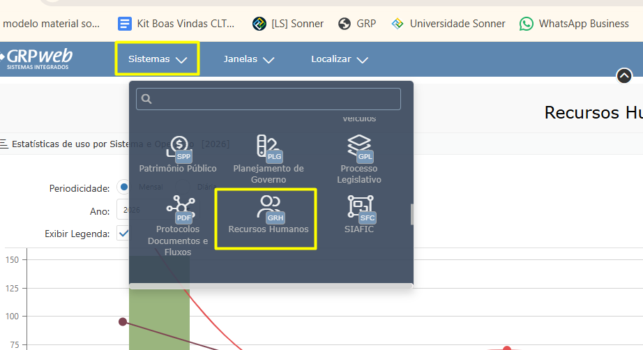
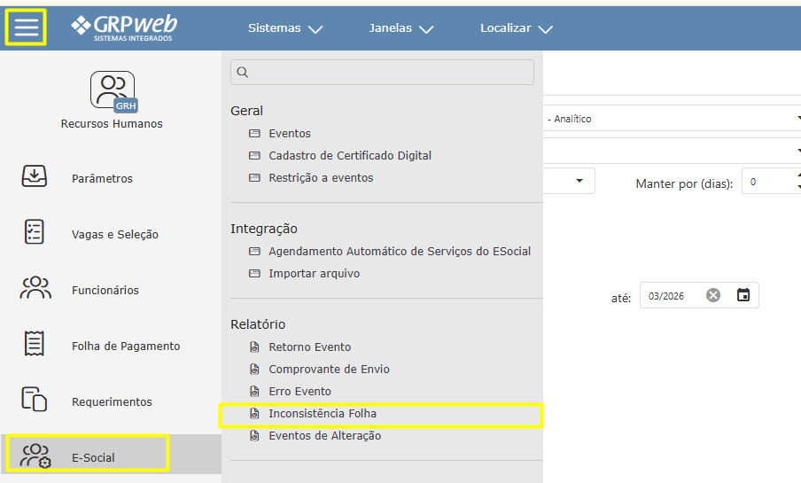
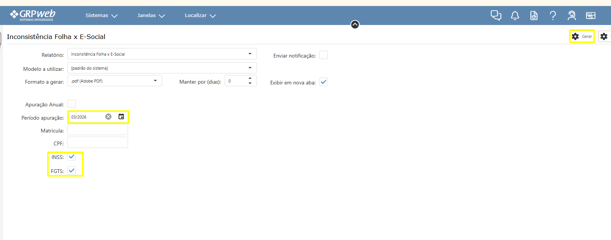

Voltar
Após realizar login, acesse o sistema de Recursos Humanos web

Siga o caminho: Menu > E-social > Inconsistência folha

Preencha os campos : "Período apuração", "INSS", "FGTS" e clique em "Gerar"
